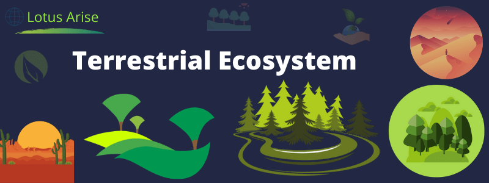
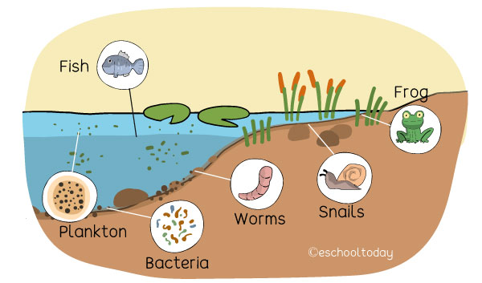
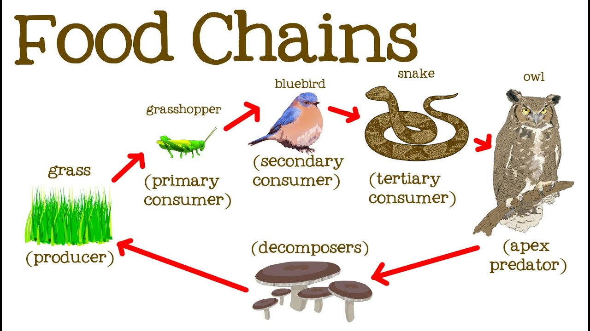
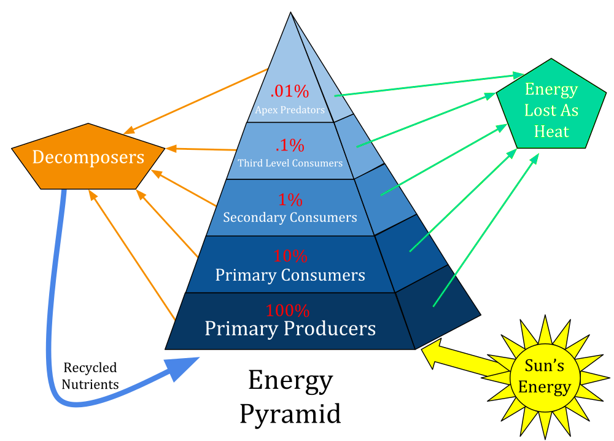

An ecosystem can be as small as an oasis in a desert, or as big as an ocean, spanning thousands of miles. There are two types of ecosystem:
 Important Ecological Concepts
 
Ecological concepts are general understandings (or facts) about ecosystems and ecosystem management. Ecological principles are basic assumptions (or beliefs) about ecosystems and how they function that are informed by the ecological concepts.